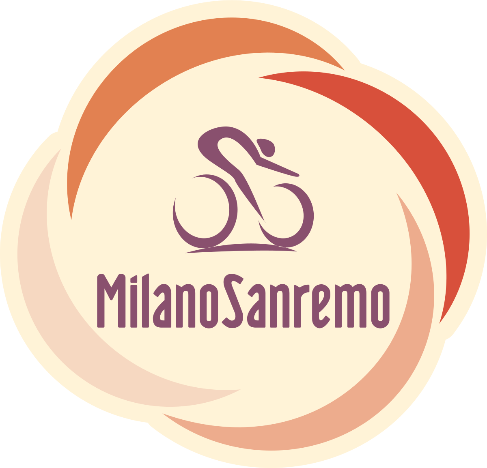
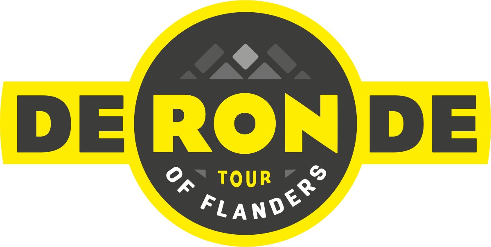
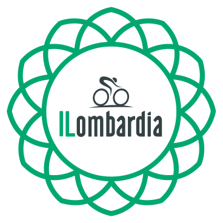

Monuments
Un monument du cyclisme est une course mythique, qui symbolise ce qu’est le cyclisme dans toute sa splendeur. Il s’agit de plusieurs courses cyclistes prestigieuses de par les paysages traversés, les difficultés du parcours ou encore les spécificités du territoire.
De plus, la plupart des courses désignées comme monuments du cyclisme sont des courses très anciennes, d’où leur aspect mythique.
Aujourd’hui encore, seulement trois coureurs (tous Belges) ont remporté les cinq Monuments au cours de leur carrière : Roger De Vlaeminck, Rik Van Looy et Eddy Merckx.

Milan-San Remo :
- 3ème samedi de mars / 291 km / Classique pour sprinteurs en raison de son parcours principalement plat.
Tour des Flandres :
- Début avril / 260 km / Classique régulièrement disputé sous le mauvais temps, avec un parcours composé de courtes montées pavées et abruptes.


Paris-Roubaix :
- 1 semaine après le Tour des Flandres / 258 km / Classique plate qui tire sa difficulté particulière des quelques cinquante kilomètres de passages pavés extrêmement rugueux.
Liège-Bastogne-Liège :
- Fin avril / 258 km / Classique avec de nombreuses côtes de longueurs variables et parsemées le long de la course.

Tour de Lombardie :
- 3ème weekend d’octobre / 240 km / Classique pour grimpeurs qui se court sur un parcours difficile, entre les lacs et les montagnes de Lombardie.